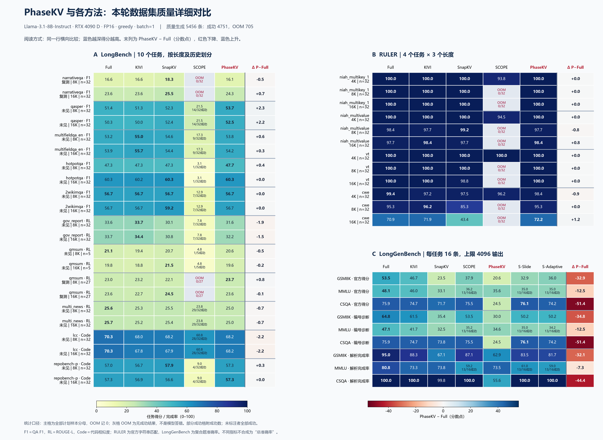
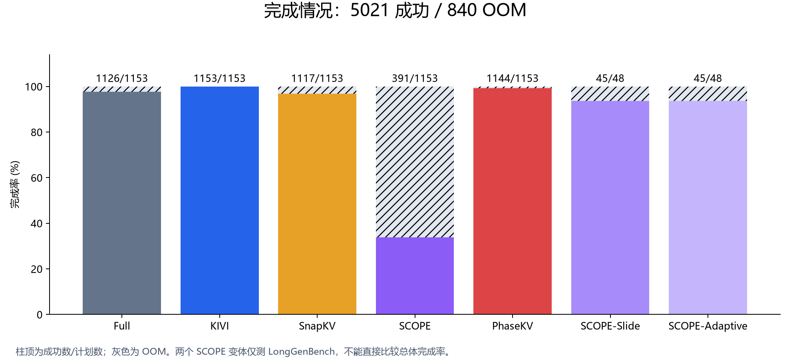
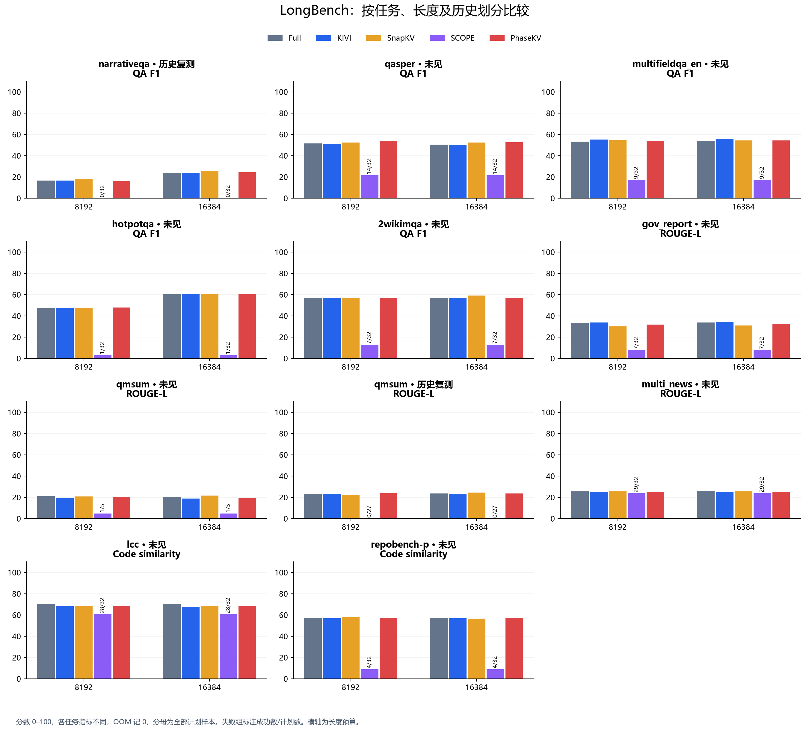
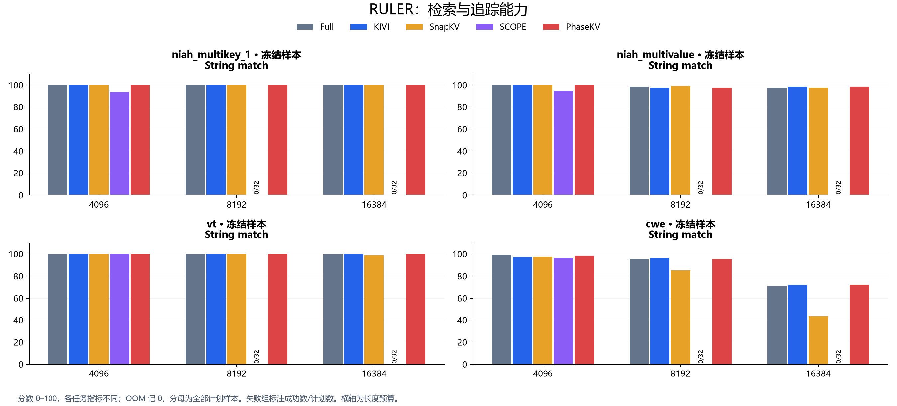
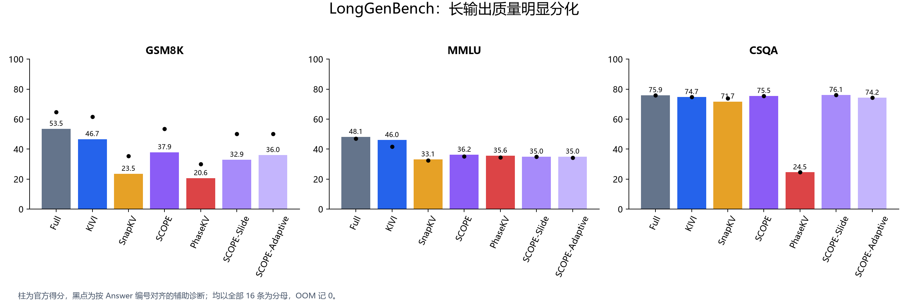
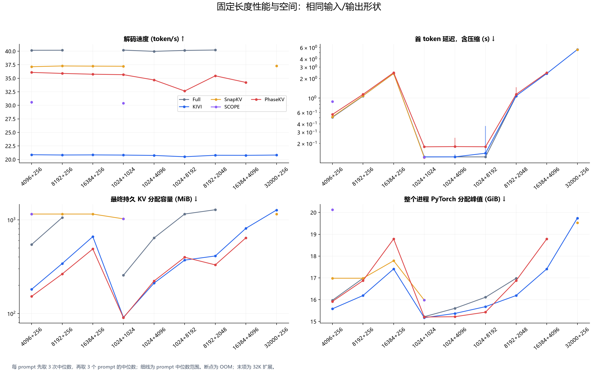
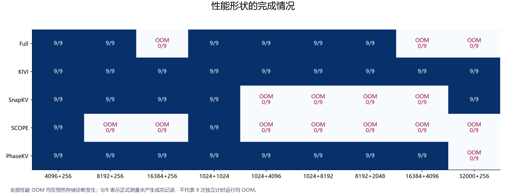
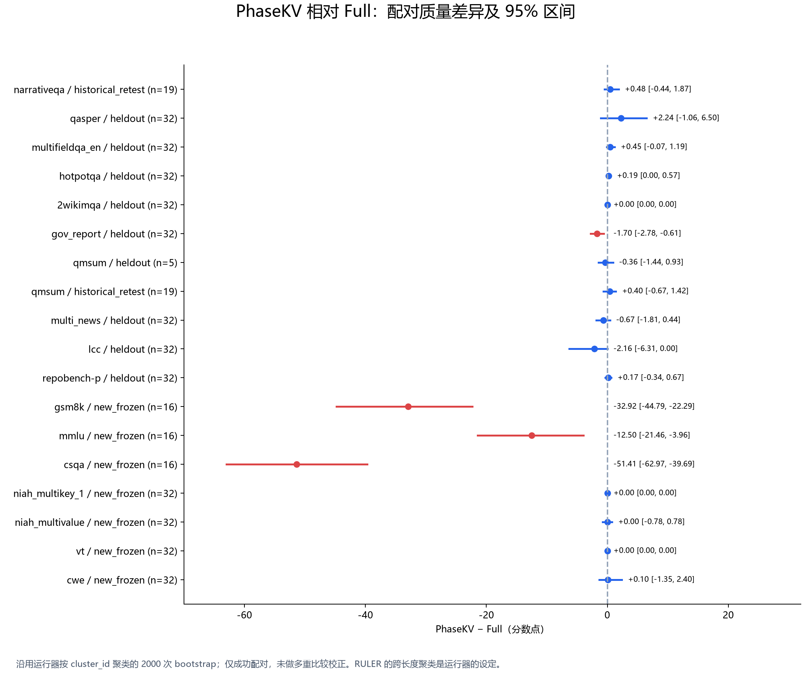
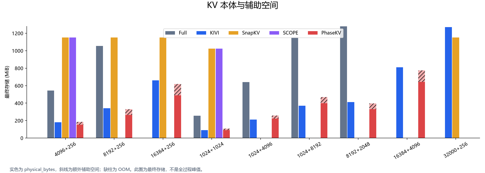

2026-10-31 · Llama-3.1-8B-Instruct · FP16 · RTX 4090 D · batch=1

本轮 5861 条计划记录全部有结果：5021 成功、840 OOM（14.33%），没有 error 或 pending。原子 records 与 records.jsonl 内容一致，冻结输入哈希、逐条输入哈希、协议哈希及固定输出长度核验通过。
PhaseKV 完成全部 1072 条质量生成及 72/81 条性能测量；仅 32000+256 性能形状失败。KIVI 全部完成。Full 在 16384+256、16384+4096、32000+256 的性能预热失败。
在与 Full 共同成功的 6 个性能形状上，PhaseKV 解码速度为 Full 的 81.3%–89.8%，因此本轮不支持“比 Full 更快”。相对 KIVI，PhaseKV 在共同成功的 8 个形状上快 1.59–1.73 倍。
共同成功形状中，PhaseKV 最终 KV 本体容量比 Full 减少 64.8%–75.0%；把辅助空间也计入后，减少 58.1%–69.0%。这些是最终分配容量，不是全过程峰值。
LongBench 多数任务与 Full 的配对差异较小；gov_report 下降 1.70 分，未校正 95% 区间为 [-2.78, -0.61]。其余区间包含或触及 0，不能据此宣称统计等效。narrativeqa 全为历史复测；qmsum 分为未见和历史复测。
RULER 中 PhaseKV 与 Full 的任务级平均分接近：multikey 与 vt 均为 100；multivalue 均为 98.70；cwe 为 88.65 对 88.54。SCOPE 大量长输入 OOM，必须同时看失败分母。
LongGenBench 暴露明显退化：PhaseKV 的 GSM8K/MMLU/CSQA 官方得分为 20.63/35.63/24.53，Full 为 53.54/48.13/75.94；配对差值分别为 -32.92/-12.50/-51.41 分，三个未校正区间均低于 0。
PhaseKV 的 GSM8K/MMLU/CSQA 按编号解析完成率为 62.92%/73.54%/55.63%；CSQA 全部 16 条触及 4096 输出上限。长输出问题不仅是官方 parser 的差异，按编号辅助得分同样下降。完成率指成功解析的答案比例，不能把所有未解析项都认定为模型未作答。
输出原文复核：以“同一个 Answer 编号出现至少 5 次”为可复现诊断，PhaseKV 的 CSQA 有 5/16 条触发，Full 为 0/16 条。比如 longgenbench/csqa/23 和 /26 均反复输出 Answer_6:，官方分与按编号完成率均为 0，输出达到 4096 token。另有 /25 在完成目标答案后继续生成编号和重复内容。原文尾部及各方法触发列表保存在 repeated_answer_examples.json。该规则只检查重复编号，不能覆盖所有重复退化。
SCOPE 主版本 762 条 OOM，约占全部 OOM 的 90.7%。代表性栈显示 SCOPE 在 H2O prefill 完整注意力矩阵分配失败；Full/SnapKV 在 KV 拼接处失败；PhaseKV 的 32K 失败栈位于 MLP。这些定位描述失败位置，尚不足以证明唯一根因。
性能测试的 135 条 OOM 记录全来自预热存储诊断。成功诊断的开销不进入速度表，但预热失败会阻止正式测量；容量结果仅适用于本轮整个执行协议，不能视作脱离 runner 的纯推理容量上限。
Full 的 KV 为 8 头布局，SnapKV/SCOPE 为 32 头布局。4096+256 形状最终 KV：Full 543.88 MiB，SnapKV/SCOPE 1151.50 MiB，PhaseKV 152.06 MiB（含辅助为 184.93 MiB）。不能用保留 token 数代替物理字节。
建议优先核查 PhaseKV 长输出的答案序列、输出上限与压缩影响，再安排独立的参数或 P5 消融实验；本轮数据不能单独定位到某个量化模块。新增实验必须新开输出目录，保持本轮证据。
统计限制：各任务指标不同，不合成为总准确率。质量生成的自然 EOS 速度不用于性能比较。性能先每 prompt 取重复中位数，再跨 prompt 取中位数；图中范围不是置信区间。不同方法按阶段分批运行，温度/频率仅有端点采样。
narrativeqa 的 32 个选择索引实际对应 19 个独立上下文簇；qmsum 的 27 个历史索引对应 19 个上下文簇。配对统计使用上下文簇，避免把共享上下文重复当作独立证据。每组 bootstrap 区间未校正多重比较。
源码审计：清单中的 9 个本地文件哈希全部与运行协议一致。这里只核对清单指纹，未重新执行 GPU 推理或重算全部官方评分。
| 方法 | 计划 | 成功 | OOM | 成功率 |
|---|---|---|---|---|
| Full | 1153 | 1126 | 27 | 97.7% |
| KIVI | 1153 | 1153 | 0 | 100.0% |
| SnapKV | 1153 | 1117 | 36 | 96.9% |
| SCOPE | 1153 | 391 | 762 | 33.9% |
| PhaseKV | 1153 | 1144 | 9 | 99.2% |
| SCOPE-Slide | 48 | 45 | 3 | 93.8% |
| SCOPE-Adaptive | 48 | 45 | 3 | 93.8% |
柱顶为成功数/计划数；灰色为 OOM。两个 SCOPE 变体仅测 LongGenBench，不能直接比较总体完成率。
下载 SVG
分数 0–100，各任务指标不同；OOM 记 0，分母为全部计划样本。失败组标注成功数/计划数。横轴为长度预算。
下载 SVG
分数 0–100，各任务指标不同；OOM 记 0，分母为全部计划样本。失败组标注成功数/计划数。横轴为长度预算。
下载 SVG
柱为官方得分，黑点为按 Answer 编号对齐的辅助诊断；均以全部 16 条为分母，OOM 记 0。
下载 SVG
每 prompt 先取 3 次中位数，再取 3 个 prompt 的中位数；细线为 prompt 中位数范围。断点为 OOM；末项为 32K 扩展。
下载 SVG
全部性能 OOM 均在预热存储诊断发生；0/9 表示正式测量未产生成功记录，不代表 9 次独立计时运行均 OOM。
下载 SVG
沿用运行器按 cluster_id 聚类的 2000 次 bootstrap；仅成功配对，未做多重比较校正。RULER 的跨长度聚类是运行器的设定。
下载 SVG
实色为 physical_bytes，斜线为额外辅助空间；缺柱为 OOM。此图为最终存储，不是全过程峰值。
下载 SVG
| 任务 | 方法 | 成功 | 官方系统分 | 编号诊断分 | 解析完成率% | 触及输出上限 | 计划 |
|---|---|---|---|---|---|---|---|
| gsm8k | Full | 16 | 53.54 | 64.79 | 95.00 | 1 | 16 |
| gsm8k | KIVI | 16 | 46.67 | 61.46 | 88.33 | 3 | 16 |
| gsm8k | SnapKV | 16 | 23.54 | 35.42 | 67.08 | 13 | 16 |
| gsm8k | SCOPE | 16 | 37.92 | 53.54 | 87.08 | 13 | 16 |
| gsm8k | PhaseKV | 16 | 20.62 | 30.00 | 62.92 | 11 | 16 |
| gsm8k | SCOPE-Slide | 16 | 32.92 | 50.21 | 83.54 | 16 | 16 |
| gsm8k | SCOPE-Adaptive | 16 | 36.04 | 50.21 | 81.67 | 12 | 16 |
| mmlu | Full | 16 | 48.12 | 47.08 | 80.83 | 6 | 16 |
| mmlu | KIVI | 16 | 46.04 | 41.67 | 73.33 | 6 | 16 |
| mmlu | SnapKV | 16 | 33.12 | 32.50 | 73.75 | 9 | 16 |
| mmlu | SCOPE | 13 | 36.25 | 35.21 | 59.17 | 8 | 16 |
| mmlu | PhaseKV | 16 | 35.62 | 34.58 | 73.54 | 6 | 16 |
| mmlu | SCOPE-Slide | 13 | 35.00 | 35.00 | 61.04 | 5 | 16 |
| mmlu | SCOPE-Adaptive | 13 | 35.00 | 34.17 | 58.96 | 7 | 16 |
| csqa | Full | 16 | 75.94 | 75.94 | 100.00 | 13 | 16 |
| csqa | KIVI | 16 | 74.69 | 74.69 | 100.00 | 13 | 16 |
| csqa | SnapKV | 16 | 71.72 | 73.75 | 99.84 | 11 | 16 |
| csqa | SCOPE | 16 | 75.47 | 75.47 | 100.00 | 15 | 16 |
| csqa | PhaseKV | 16 | 24.53 | 24.53 | 55.62 | 16 | 16 |
| csqa | SCOPE-Slide | 16 | 76.09 | 76.09 | 100.00 | 14 | 16 |
| csqa | SCOPE-Adaptive | 16 | 74.22 | 74.22 | 100.00 | 15 | 16 |
| 输入+输出 | 方法 | 成功/9 | token/s | TTFT秒 | KV MiB | 含辅助 MiB | 分配峰值 GiB |
|---|---|---|---|---|---|---|---|
| 4096+256 | Full | 9 | 40.17 | 0.51 | 543.88 | 543.88 | 15.97 |
| 4096+256 | KIVI | 9 | 20.87 | 0.51 | 180.92 | 180.92 | 15.58 |
| 4096+256 | SnapKV | 9 | 37.14 | 0.51 | 1151.50 | 1151.50 | 16.98 |
| 4096+256 | SCOPE | 9 | 30.58 | 0.88 | 1151.50 | 1151.50 | 20.13 |
| 4096+256 | PhaseKV | 9 | 36.08 | 0.56 | 152.06 | 184.93 | 15.92 |
| 8192+256 | Full | 9 | 40.18 | 1.07 | 1055.88 | 1055.88 | 16.98 |
| 8192+256 | KIVI | 9 | 20.83 | 1.08 | 340.92 | 340.92 | 16.19 |
| 8192+256 | SnapKV | 9 | 37.27 | 1.08 | 1151.50 | 1151.50 | 16.98 |
| 8192+256 | SCOPE | 0 | OOM | OOM | OOM | OOM | OOM |
| 8192+256 | PhaseKV | 9 | 35.90 | 1.14 | 264.09 | 329.83 | 16.88 |
| 16384+256 | Full | 0 | OOM | OOM | OOM | OOM | OOM |
| 16384+256 | KIVI | 9 | 20.84 | 2.38 | 660.92 | 660.92 | 17.41 |
| 16384+256 | SnapKV | 9 | 37.24 | 2.39 | 1151.50 | 1151.50 | 17.79 |
| 16384+256 | SCOPE | 0 | OOM | OOM | OOM | OOM | OOM |
| 16384+256 | PhaseKV | 9 | 35.75 | 2.46 | 488.10 | 619.59 | 18.79 |
| 1024+1024 | Full | 9 | 40.20 | 0.12 | 255.88 | 255.88 | 15.22 |
| 1024+1024 | KIVI | 9 | 20.81 | 0.12 | 90.92 | 90.92 | 15.17 |
| 1024+1024 | SnapKV | 9 | 37.22 | 0.12 | 1023.50 | 1023.50 | 15.98 |
| 1024+1024 | SCOPE | 9 | 30.38 | 0.12 | 1023.50 | 1023.50 | 15.98 |
| 1024+1024 | PhaseKV | 9 | 35.66 | 0.18 | 90.10 | 107.09 | 15.21 |
| 1024+4096 | Full | 9 | 39.97 | 0.12 | 639.88 | 639.88 | 15.60 |
| 1024+4096 | KIVI | 9 | 20.74 | 0.12 | 210.92 | 210.92 | 15.37 |
| 1024+4096 | SnapKV | 0 | OOM | OOM | OOM | OOM | OOM |
| 1024+4096 | SCOPE | 0 | OOM | OOM | OOM | OOM | OOM |
| 1024+4096 | PhaseKV | 9 | 34.69 | 0.18 | 222.10 | 257.59 | 15.22 |
| 1024+8192 | Full | 9 | 40.15 | 0.12 | 1151.88 | 1151.88 | 16.11 |
| 1024+8192 | KIVI | 9 | 20.50 | 0.14 | 370.92 | 370.92 | 15.68 |
| 1024+8192 | SnapKV | 0 | OOM | OOM | OOM | OOM | OOM |
| 1024+8192 | SCOPE | 0 | OOM | OOM | OOM | OOM | OOM |
| 1024+8192 | PhaseKV | 9 | 32.65 | 0.18 | 398.10 | 469.09 | 15.43 |
| 8192+2048 | Full | 9 | 40.22 | 1.07 | 1279.88 | 1279.88 | 16.98 |
| 8192+2048 | KIVI | 9 | 20.78 | 1.08 | 410.92 | 410.92 | 16.19 |
| 8192+2048 | SnapKV | 0 | OOM | OOM | OOM | OOM | OOM |
| 8192+2048 | SCOPE | 0 | OOM | OOM | OOM | OOM | OOM |
| 8192+2048 | PhaseKV | 9 | 35.45 | 1.14 | 330.09 | 396.58 | 16.88 |
| 16384+4096 | Full | 0 | OOM | OOM | OOM | OOM | OOM |
| 16384+4096 | KIVI | 9 | 20.76 | 2.38 | 810.92 | 810.92 | 17.41 |
| 16384+4096 | SnapKV | 0 | OOM | OOM | OOM | OOM | OOM |
| 16384+4096 | SCOPE | 0 | OOM | OOM | OOM | OOM | OOM |
| 16384+4096 | PhaseKV | 9 | 34.23 | 2.46 | 642.10 | 775.09 | 18.79 |
| 32000+256 | Full | 0 | OOM | OOM | OOM | OOM | OOM |
| 32000+256 | KIVI | 9 | 20.81 | 5.58 | 1270.92 | 1270.92 | 19.74 |
| 32000+256 | SnapKV | 9 | 37.27 | 5.55 | 1151.50 | 1151.50 | 19.52 |
| 32000+256 | SCOPE | 0 | OOM | OOM | OOM | OOM | OOM |
| 32000+256 | PhaseKV | 0 | OOM | OOM | OOM | OOM | OOM |
| 套件 | 任务 | 划分 | 长度 | 方法 | 成功 | 计划 | 成功均分 | 失败记零系统分 |
|---|---|---|---|---|---|---|---|---|
| longbench | narrativeqa | historical_retest | 8192 | full | 32 | 32 | 16.56 | 16.56 |
| longbench | narrativeqa | historical_retest | 8192 | kivi | 32 | 32 | 16.56 | 16.56 |
| longbench | narrativeqa | historical_retest | 8192 | snapkv | 32 | 32 | 18.30 | 18.30 |
| longbench | narrativeqa | historical_retest | 8192 | scope | 0 | 32 | — | 0.00 |
| longbench | narrativeqa | historical_retest | 8192 | phasekv | 32 | 32 | 16.06 | 16.06 |
| longbench | narrativeqa | historical_retest | 16384 | full | 32 | 32 | 23.59 | 23.59 |
| longbench | narrativeqa | historical_retest | 16384 | kivi | 32 | 32 | 23.59 | 23.59 |
| longbench | narrativeqa | historical_retest | 16384 | snapkv | 32 | 32 | 25.49 | 25.49 |
| longbench | narrativeqa | historical_retest | 16384 | scope | 0 | 32 | — | 0.00 |
| longbench | narrativeqa | historical_retest | 16384 | phasekv | 32 | 32 | 24.28 | 24.28 |
| longbench | qasper | heldout | 8192 | full | 32 | 32 | 51.35 | 51.35 |
| longbench | qasper | heldout | 8192 | kivi | 32 | 32 | 51.30 | 51.30 |
| longbench | qasper | heldout | 8192 | snapkv | 32 | 32 | 52.34 | 52.34 |
| longbench | qasper | heldout | 8192 | scope | 14 | 32 | 49.23 | 21.54 |
| longbench | qasper | heldout | 8192 | phasekv | 32 | 32 | 53.67 | 53.67 |
| longbench | qasper | heldout | 16384 | full | 32 | 32 | 50.30 | 50.30 |
| longbench | qasper | heldout | 16384 | kivi | 32 | 32 | 50.04 | 50.04 |
| longbench | qasper | heldout | 16384 | snapkv | 32 | 32 | 52.37 | 52.37 |
| longbench | qasper | heldout | 16384 | scope | 14 | 32 | 49.23 | 21.54 |
| longbench | qasper | heldout | 16384 | phasekv | 32 | 32 | 52.46 | 52.46 |
| longbench | multifieldqa_en | heldout | 8192 | full | 32 | 32 | 53.15 | 53.15 |
| longbench | multifieldqa_en | heldout | 8192 | kivi | 32 | 32 | 55.04 | 55.04 |
| longbench | multifieldqa_en | heldout | 8192 | snapkv | 32 | 32 | 54.64 | 54.64 |
| longbench | multifieldqa_en | heldout | 8192 | scope | 9 | 32 | 61.46 | 17.28 |
| longbench | multifieldqa_en | heldout | 8192 | phasekv | 32 | 32 | 53.77 | 53.77 |
| longbench | multifieldqa_en | heldout | 16384 | full | 32 | 32 | 53.91 | 53.91 |
| longbench | multifieldqa_en | heldout | 16384 | kivi | 32 | 32 | 55.67 | 55.67 |
| longbench | multifieldqa_en | heldout | 16384 | snapkv | 32 | 32 | 54.37 | 54.37 |
| longbench | multifieldqa_en | heldout | 16384 | scope | 9 | 32 | 61.46 | 17.28 |
| longbench | multifieldqa_en | heldout | 16384 | phasekv | 32 | 32 | 54.20 | 54.20 |
| longbench | hotpotqa | heldout | 8192 | full | 32 | 32 | 47.32 | 47.32 |
| longbench | hotpotqa | heldout | 8192 | kivi | 32 | 32 | 47.32 | 47.32 |
| longbench | hotpotqa | heldout | 8192 | snapkv | 32 | 32 | 47.32 | 47.32 |
| longbench | hotpotqa | heldout | 8192 | scope | 1 | 32 | 100.00 | 3.12 |
| longbench | hotpotqa | heldout | 8192 | phasekv | 32 | 32 | 47.69 | 47.69 |
| longbench | hotpotqa | heldout | 16384 | full | 32 | 32 | 60.25 | 60.25 |
| longbench | hotpotqa | heldout | 16384 | kivi | 32 | 32 | 60.24 | 60.24 |
| longbench | hotpotqa | heldout | 16384 | snapkv | 32 | 32 | 60.27 | 60.27 |
| longbench | hotpotqa | heldout | 16384 | scope | 1 | 32 | 100.00 | 3.12 |
| longbench | hotpotqa | heldout | 16384 | phasekv | 32 | 32 | 60.27 | 60.27 |
| longbench | 2wikimqa | heldout | 8192 | full | 32 | 32 | 56.67 | 56.67 |
| longbench | 2wikimqa | heldout | 8192 | kivi | 32 | 32 | 56.67 | 56.67 |
| longbench | 2wikimqa | heldout | 8192 | snapkv | 32 | 32 | 56.67 | 56.67 |
| longbench | 2wikimqa | heldout | 8192 | scope | 7 | 32 | 59.05 | 12.92 |
| longbench | 2wikimqa | heldout | 8192 | phasekv | 32 | 32 | 56.67 | 56.67 |
| longbench | 2wikimqa | heldout | 16384 | full | 32 | 32 | 56.67 | 56.67 |
| longbench | 2wikimqa | heldout | 16384 | kivi | 32 | 32 | 56.67 | 56.67 |
| longbench | 2wikimqa | heldout | 16384 | snapkv | 32 | 32 | 59.17 | 59.17 |
| longbench | 2wikimqa | heldout | 16384 | scope | 7 | 32 | 59.05 | 12.92 |
| longbench | 2wikimqa | heldout | 16384 | phasekv | 32 | 32 | 56.67 | 56.67 |
| longbench | gov_report | heldout | 8192 | full | 32 | 32 | 33.57 | 33.57 |
| longbench | gov_report | heldout | 8192 | kivi | 32 | 32 | 33.74 | 33.74 |
| longbench | gov_report | heldout | 8192 | snapkv | 32 | 32 | 30.12 | 30.12 |
| longbench | gov_report | heldout | 8192 | scope | 7 | 32 | 35.76 | 7.82 |
| longbench | gov_report | heldout | 8192 | phasekv | 32 | 32 | 31.65 | 31.65 |
| longbench | gov_report | heldout | 16384 | full | 32 | 32 | 33.71 | 33.71 |
| longbench | gov_report | heldout | 16384 | kivi | 32 | 32 | 34.39 | 34.39 |
| longbench | gov_report | heldout | 16384 | snapkv | 32 | 32 | 30.84 | 30.84 |
| longbench | gov_report | heldout | 16384 | scope | 7 | 32 | 35.76 | 7.82 |
| longbench | gov_report | heldout | 16384 | phasekv | 32 | 32 | 32.23 | 32.23 |
| longbench | qmsum | heldout | 8192 | full | 5 | 5 | 21.07 | 21.07 |
| longbench | qmsum | heldout | 8192 | kivi | 5 | 5 | 19.45 | 19.45 |
| longbench | qmsum | heldout | 8192 | snapkv | 5 | 5 | 20.73 | 20.73 |
| longbench | qmsum | heldout | 8192 | scope | 1 | 5 | 23.88 | 4.78 |
| longbench | qmsum | heldout | 8192 | phasekv | 5 | 5 | 20.58 | 20.58 |
| longbench | qmsum | heldout | 16384 | full | 5 | 5 | 19.83 | 19.83 |
| longbench | qmsum | heldout | 16384 | kivi | 5 | 5 | 18.77 | 18.77 |
| longbench | qmsum | heldout | 16384 | snapkv | 5 | 5 | 21.53 | 21.53 |
| longbench | qmsum | heldout | 16384 | scope | 1 | 5 | 23.88 | 4.78 |
| longbench | qmsum | heldout | 16384 | phasekv | 5 | 5 | 19.61 | 19.61 |
| longbench | qmsum | historical_retest | 8192 | full | 27 | 27 | 22.95 | 22.95 |
| longbench | qmsum | historical_retest | 8192 | kivi | 27 | 27 | 23.19 | 23.19 |
| longbench | qmsum | historical_retest | 8192 | snapkv | 27 | 27 | 22.06 | 22.06 |
| longbench | qmsum | historical_retest | 8192 | scope | 0 | 27 | — | 0.00 |
| longbench | qmsum | historical_retest | 8192 | phasekv | 27 | 27 | 23.73 | 23.73 |
| longbench | qmsum | historical_retest | 16384 | full | 27 | 27 | 23.62 | 23.62 |
| longbench | qmsum | historical_retest | 16384 | kivi | 27 | 27 | 22.67 | 22.67 |
| longbench | qmsum | historical_retest | 16384 | snapkv | 27 | 27 | 24.52 | 24.52 |
| longbench | qmsum | historical_retest | 16384 | scope | 0 | 27 | — | 0.00 |
| longbench | qmsum | historical_retest | 16384 | phasekv | 27 | 27 | 23.55 | 23.55 |
| longbench | multi_news | heldout | 8192 | full | 32 | 32 | 25.65 | 25.65 |
| longbench | multi_news | heldout | 8192 | kivi | 32 | 32 | 25.26 | 25.26 |
| longbench | multi_news | heldout | 8192 | snapkv | 32 | 32 | 25.48 | 25.48 |
| longbench | multi_news | heldout | 8192 | scope | 29 | 32 | 26.25 | 23.78 |
| longbench | multi_news | heldout | 8192 | phasekv | 32 | 32 | 24.96 | 24.96 |
| longbench | multi_news | heldout | 16384 | full | 32 | 32 | 25.70 | 25.70 |
| longbench | multi_news | heldout | 16384 | kivi | 32 | 32 | 25.24 | 25.24 |
| longbench | multi_news | heldout | 16384 | snapkv | 32 | 32 | 25.44 | 25.44 |
| longbench | multi_news | heldout | 16384 | scope | 29 | 32 | 26.25 | 23.78 |
| longbench | multi_news | heldout | 16384 | phasekv | 32 | 32 | 25.04 | 25.04 |
| longbench | lcc | heldout | 8192 | full | 32 | 32 | 70.31 | 70.31 |
| longbench | lcc | heldout | 8192 | kivi | 32 | 32 | 68.03 | 68.03 |
| longbench | lcc | heldout | 8192 | snapkv | 32 | 32 | 68.16 | 68.16 |
| longbench | lcc | heldout | 8192 | scope | 28 | 32 | 69.43 | 60.75 |
| longbench | lcc | heldout | 8192 | phasekv | 32 | 32 | 68.16 | 68.16 |
| longbench | lcc | heldout | 16384 | full | 32 | 32 | 70.31 | 70.31 |
| longbench | lcc | heldout | 16384 | kivi | 32 | 32 | 67.78 | 67.78 |
| longbench | lcc | heldout | 16384 | snapkv | 32 | 32 | 67.94 | 67.94 |
| longbench | lcc | heldout | 16384 | scope | 28 | 32 | 69.43 | 60.75 |
| longbench | lcc | heldout | 16384 | phasekv | 32 | 32 | 68.16 | 68.16 |
| longbench | repobench-p | heldout | 8192 | full | 32 | 32 | 57.03 | 57.03 |
| longbench | repobench-p | heldout | 8192 | kivi | 32 | 32 | 56.72 | 56.72 |
| longbench | repobench-p | heldout | 8192 | snapkv | 32 | 32 | 57.94 | 57.94 |
| longbench | repobench-p | heldout | 8192 | scope | 4 | 32 | 72.00 | 9.00 |
| longbench | repobench-p | heldout | 8192 | phasekv | 32 | 32 | 57.34 | 57.34 |
| longbench | repobench-p | heldout | 16384 | full | 32 | 32 | 57.28 | 57.28 |
| longbench | repobench-p | heldout | 16384 | kivi | 32 | 32 | 56.88 | 56.88 |
| longbench | repobench-p | heldout | 16384 | snapkv | 32 | 32 | 56.62 | 56.62 |
| longbench | repobench-p | heldout | 16384 | scope | 4 | 32 | 72.00 | 9.00 |
| longbench | repobench-p | heldout | 16384 | phasekv | 32 | 32 | 57.31 | 57.31 |
| longgenbench | gsm8k | new_frozen | 4k_output | full | 16 | 16 | 53.54 | 53.54 |
| longgenbench | gsm8k | new_frozen | 4k_output | kivi | 16 | 16 | 46.67 | 46.67 |
| longgenbench | gsm8k | new_frozen | 4k_output | snapkv | 16 | 16 | 23.54 | 23.54 |
| longgenbench | gsm8k | new_frozen | 4k_output | scope | 16 | 16 | 37.92 | 37.92 |
| longgenbench | gsm8k | new_frozen | 4k_output | phasekv | 16 | 16 | 20.62 | 20.62 |
| longgenbench | gsm8k | new_frozen | 4k_output | scope_slide | 16 | 16 | 32.92 | 32.92 |
| longgenbench | gsm8k | new_frozen | 4k_output | scope_adaptive | 16 | 16 | 36.04 | 36.04 |
| longgenbench | mmlu | new_frozen | 4k_output | full | 16 | 16 | 48.12 | 48.12 |
| longgenbench | mmlu | new_frozen | 4k_output | kivi | 16 | 16 | 46.04 | 46.04 |
| longgenbench | mmlu | new_frozen | 4k_output | snapkv | 16 | 16 | 33.12 | 33.12 |
| longgenbench | mmlu | new_frozen | 4k_output | scope | 13 | 16 | 44.62 | 36.25 |
| longgenbench | mmlu | new_frozen | 4k_output | phasekv | 16 | 16 | 35.62 | 35.62 |
| longgenbench | mmlu | new_frozen | 4k_output | scope_slide | 13 | 16 | 43.08 | 35.00 |
| longgenbench | mmlu | new_frozen | 4k_output | scope_adaptive | 13 | 16 | 43.08 | 35.00 |
| longgenbench | csqa | new_frozen | 4k_output | full | 16 | 16 | 75.94 | 75.94 |
| longgenbench | csqa | new_frozen | 4k_output | kivi | 16 | 16 | 74.69 | 74.69 |
| longgenbench | csqa | new_frozen | 4k_output | snapkv | 16 | 16 | 71.72 | 71.72 |
| longgenbench | csqa | new_frozen | 4k_output | scope | 16 | 16 | 75.47 | 75.47 |
| longgenbench | csqa | new_frozen | 4k_output | phasekv | 16 | 16 | 24.53 | 24.53 |
| longgenbench | csqa | new_frozen | 4k_output | scope_slide | 16 | 16 | 76.09 | 76.09 |
| longgenbench | csqa | new_frozen | 4k_output | scope_adaptive | 16 | 16 | 74.22 | 74.22 |
| ruler | niah_multikey_1 | new_frozen | 4096 | full | 32 | 32 | 100.00 | 100.00 |
| ruler | niah_multikey_1 | new_frozen | 4096 | kivi | 32 | 32 | 100.00 | 100.00 |
| ruler | niah_multikey_1 | new_frozen | 4096 | snapkv | 32 | 32 | 100.00 | 100.00 |
| ruler | niah_multikey_1 | new_frozen | 4096 | scope | 32 | 32 | 93.75 | 93.75 |
| ruler | niah_multikey_1 | new_frozen | 4096 | phasekv | 32 | 32 | 100.00 | 100.00 |
| ruler | niah_multikey_1 | new_frozen | 8192 | full | 32 | 32 | 100.00 | 100.00 |
| ruler | niah_multikey_1 | new_frozen | 8192 | kivi | 32 | 32 | 100.00 | 100.00 |
| ruler | niah_multikey_1 | new_frozen | 8192 | snapkv | 32 | 32 | 100.00 | 100.00 |
| ruler | niah_multikey_1 | new_frozen | 8192 | scope | 0 | 32 | — | 0.00 |
| ruler | niah_multikey_1 | new_frozen | 8192 | phasekv | 32 | 32 | 100.00 | 100.00 |
| ruler | niah_multikey_1 | new_frozen | 16384 | full | 32 | 32 | 100.00 | 100.00 |
| ruler | niah_multikey_1 | new_frozen | 16384 | kivi | 32 | 32 | 100.00 | 100.00 |
| ruler | niah_multikey_1 | new_frozen | 16384 | snapkv | 32 | 32 | 100.00 | 100.00 |
| ruler | niah_multikey_1 | new_frozen | 16384 | scope | 0 | 32 | — | 0.00 |
| ruler | niah_multikey_1 | new_frozen | 16384 | phasekv | 32 | 32 | 100.00 | 100.00 |
| ruler | niah_multivalue | new_frozen | 4096 | full | 32 | 32 | 100.00 | 100.00 |
| ruler | niah_multivalue | new_frozen | 4096 | kivi | 32 | 32 | 100.00 | 100.00 |
| ruler | niah_multivalue | new_frozen | 4096 | snapkv | 32 | 32 | 100.00 | 100.00 |
| ruler | niah_multivalue | new_frozen | 4096 | scope | 32 | 32 | 94.53 | 94.53 |
| ruler | niah_multivalue | new_frozen | 4096 | phasekv | 32 | 32 | 100.00 | 100.00 |
| ruler | niah_multivalue | new_frozen | 8192 | full | 32 | 32 | 98.44 | 98.44 |
| ruler | niah_multivalue | new_frozen | 8192 | kivi | 32 | 32 | 97.66 | 97.66 |
| ruler | niah_multivalue | new_frozen | 8192 | snapkv | 32 | 32 | 99.22 | 99.22 |
| ruler | niah_multivalue | new_frozen | 8192 | scope | 0 | 32 | — | 0.00 |
| ruler | niah_multivalue | new_frozen | 8192 | phasekv | 32 | 32 | 97.66 | 97.66 |
| ruler | niah_multivalue | new_frozen | 16384 | full | 32 | 32 | 97.66 | 97.66 |
| ruler | niah_multivalue | new_frozen | 16384 | kivi | 32 | 32 | 98.44 | 98.44 |
| ruler | niah_multivalue | new_frozen | 16384 | snapkv | 32 | 32 | 97.66 | 97.66 |
| ruler | niah_multivalue | new_frozen | 16384 | scope | 0 | 32 | — | 0.00 |
| ruler | niah_multivalue | new_frozen | 16384 | phasekv | 32 | 32 | 98.44 | 98.44 |
| ruler | vt | new_frozen | 4096 | full | 32 | 32 | 100.00 | 100.00 |
| ruler | vt | new_frozen | 4096 | kivi | 32 | 32 | 100.00 | 100.00 |
| ruler | vt | new_frozen | 4096 | snapkv | 32 | 32 | 100.00 | 100.00 |
| ruler | vt | new_frozen | 4096 | scope | 32 | 32 | 100.00 | 100.00 |
| ruler | vt | new_frozen | 4096 | phasekv | 32 | 32 | 100.00 | 100.00 |
| ruler | vt | new_frozen | 8192 | full | 32 | 32 | 100.00 | 100.00 |
| ruler | vt | new_frozen | 8192 | kivi | 32 | 32 | 100.00 | 100.00 |
| ruler | vt | new_frozen | 8192 | snapkv | 32 | 32 | 100.00 | 100.00 |
| ruler | vt | new_frozen | 8192 | scope | 0 | 32 | — | 0.00 |
| ruler | vt | new_frozen | 8192 | phasekv | 32 | 32 | 100.00 | 100.00 |
| ruler | vt | new_frozen | 16384 | full | 32 | 32 | 100.00 | 100.00 |
| ruler | vt | new_frozen | 16384 | kivi | 32 | 32 | 100.00 | 100.00 |
| ruler | vt | new_frozen | 16384 | snapkv | 32 | 32 | 98.75 | 98.75 |
| ruler | vt | new_frozen | 16384 | scope | 0 | 32 | — | 0.00 |
| ruler | vt | new_frozen | 16384 | phasekv | 32 | 32 | 100.00 | 100.00 |
| ruler | cwe | new_frozen | 4096 | full | 32 | 32 | 99.38 | 99.38 |
| ruler | cwe | new_frozen | 4096 | kivi | 32 | 32 | 97.19 | 97.19 |
| ruler | cwe | new_frozen | 4096 | snapkv | 32 | 32 | 97.50 | 97.50 |
| ruler | cwe | new_frozen | 4096 | scope | 32 | 32 | 96.25 | 96.25 |
| ruler | cwe | new_frozen | 4096 | phasekv | 32 | 32 | 98.44 | 98.44 |
| ruler | cwe | new_frozen | 8192 | full | 32 | 32 | 95.31 | 95.31 |
| ruler | cwe | new_frozen | 8192 | kivi | 32 | 32 | 96.25 | 96.25 |
| ruler | cwe | new_frozen | 8192 | snapkv | 32 | 32 | 85.31 | 85.31 |
| ruler | cwe | new_frozen | 8192 | scope | 0 | 32 | — | 0.00 |
| ruler | cwe | new_frozen | 8192 | phasekv | 32 | 32 | 95.31 | 95.31 |
| ruler | cwe | new_frozen | 16384 | full | 32 | 32 | 70.94 | 70.94 |
| ruler | cwe | new_frozen | 16384 | kivi | 32 | 32 | 71.88 | 71.88 |
| ruler | cwe | new_frozen | 16384 | snapkv | 32 | 32 | 43.44 | 43.44 |
| ruler | cwe | new_frozen | 16384 | scope | 0 | 32 | — | 0.00 |
| ruler | cwe | new_frozen | 16384 | phasekv | 32 | 32 | 72.19 | 72.19 |
源目录：C:\Users\kladjf\Desktop\PhaseKV\不同算法的不同数据集测试\native_llama_20261029
protocol_hash: 7a7191ec4bdbc3c05cd640be19fb04aa1e277ab06ba2a8a4a73c0d4567cb9bb0
audit.json 保存一致性核验；quality_tables.json / performance_tables.json 保存图表数据。所有原始文件保持原样。重现：项目 .venv/Scripts/python.exe analyze_native_results.py。